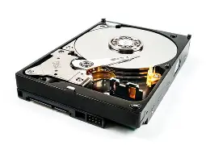
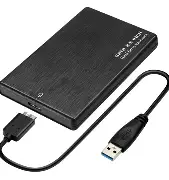

💾 Storage - Memory for Your Data
Storage is where your computer permanently keeps data. Unlike RAM (which is temporary), storage retains data even when the computer is turned off. Your operating system, applications, games, and personal files all live on storage devices.
Memory vs Storage: Memory (RAM) is fast but temporary. Storage is slower but permanent. Your computer loads data from storage into RAM when it needs to work with it.
HDD vs SSD: Hard Disk Drives use spinning disks and are slower but cheaper. Solid State Drives use flash memory and are much faster. SATA vs NVMe: SATA is the older connection standard (slower), while NVMe uses PCIe (much faster).
HDD - Hard Disk Drive
Purpose: Bulk storage, archival, budget builds
HDDs use spinning magnetic platters to store data. They're affordable and offer massive storage capacities but are much slower than SSDs. HDDs are great for storing large files like videos, photos, and game libraries.

| Type | HDD (Mechanical) |
|---|---|
| Speed | 5400 - 7200 RPM |
| Capacity | 250GB - 20TB+ |
| Interface | SATA |
| Read Speed | ~100-200 MB/s |
| Write Speed | ~80-180 MB/s |
| Advantages | Cheap, high capacity, good for archives |
| Limitations | Slow, mechanical, noisy, fragile |
SATA SSD
Purpose: Fast OS and application storage, upgrades
SATA SSDs use flash memory and the SATA interface. They're significantly faster than HDDs and are a great upgrade for older systems. While slower than NVMe drives, they're still much faster than any mechanical drive.

| Type | SATA SSD |
|---|---|
| Capacity | 120GB - 8TB |
| Interface | SATA III (6 Gbps) |
| Form Factor | 2.5", mSATA |
| Read Speed | ~500-560 MB/s |
| Write Speed | ~450-530 MB/s |
| Advantages | Good for OS, reliable, affordable |
| Limitations | Slower than NVMe, limited by SATA speed |
NVMe SSD
Purpose: High-performance storage, gaming, professional use
NVMe SSDs use the PCIe interface, offering dramatically faster speeds than SATA drives. They're ideal for gamers, content creators, and professionals who need maximum storage performance.
| Type | NVMe SSD |
|---|---|
| Capacity | 250GB - 8TB+ |
| Interface | PCIe 3.0/4.0/5.0 |
| Form Factor | M.2, U.2, Add-in card |
| Read Speed | 3,500 - 14,000+ MB/s |
| Write Speed | 3,000 - 12,000+ MB/s |
| Advantages | Extremely fast, compact, no cables |
| Limitations | More expensive, limited slots |
External Storage
Purpose: Backups, portability, additional storage
External storage connects via USB (or Thunderbolt) for portable storage, backups, and data transfer. Options include external HDDs, external SSDs, and flash drives. They're essential for moving files and protecting data.
5 Image Examples

| Type | External Storage |
|---|---|
| Capacity | 32GB - 20TB+ |
| Interface | USB 3.0/3.1/3.2, Thunderbolt |
| Read Speed | Varies (100-3000+ MB/s) |
| Write Speed | Varies (80-2800+ MB/s) |
| Advantages | Portable, easy backups, versatile |
| Limitations | Slower than internal, extra cable |